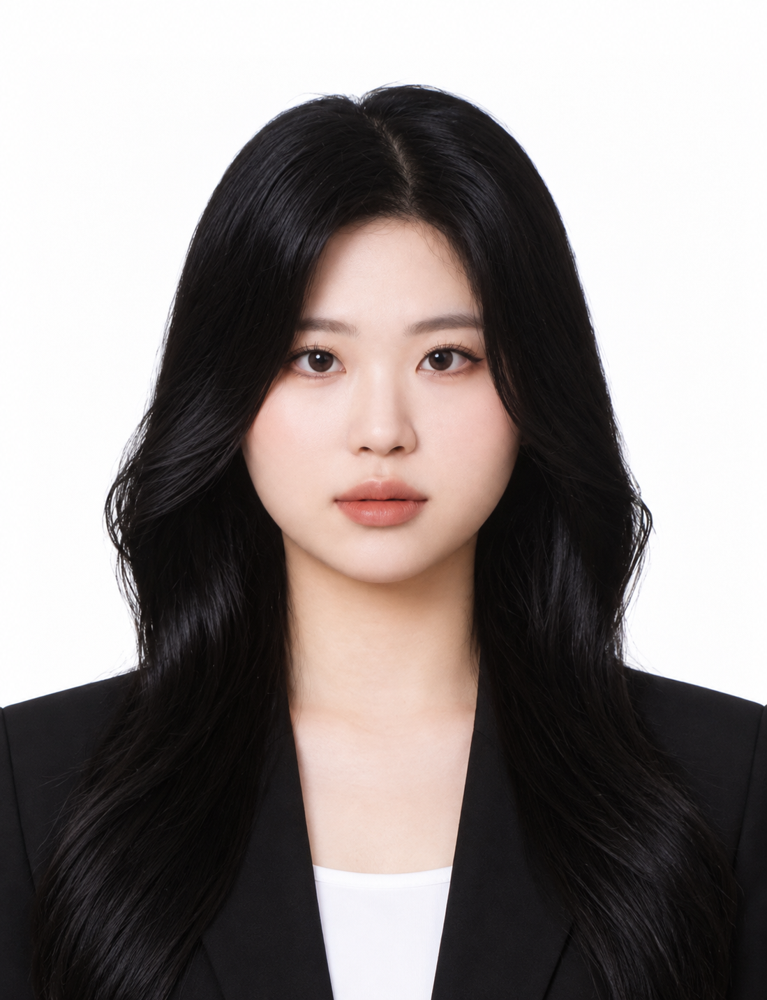
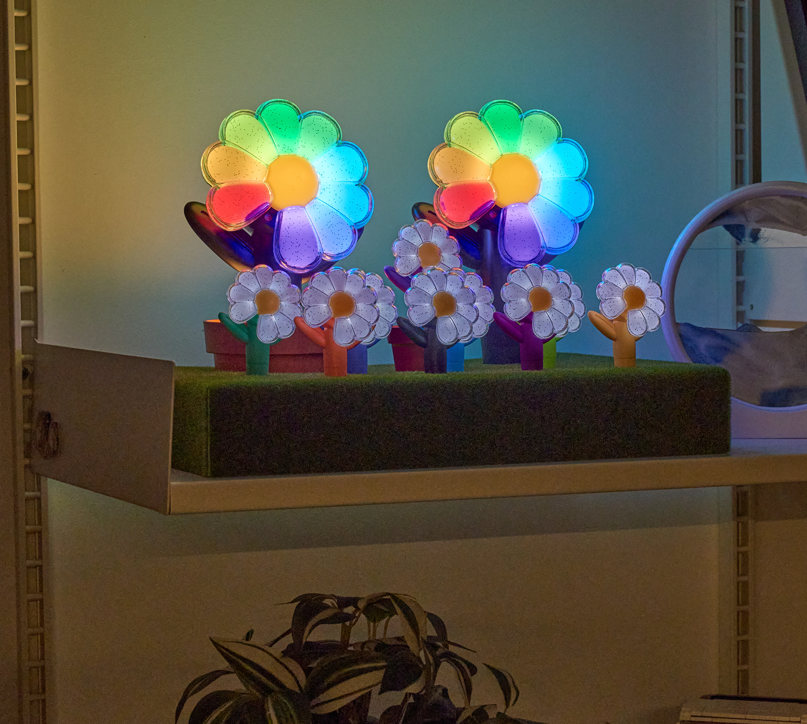

BEAUTY / 2025(01)
뷰티의 매력을,
현지의 언어로.
색조 제품을 직접 사용하는 크리에이터의 리뷰 안에, 제품의 특징과 구매 경험을 함께 담은 협업입니다.
Muzigae Mansion · VEASLY
인플루언서 협업 운영 · 콘텐츠 현지화

색조 제품을 직접 사용하는 크리에이터의 리뷰 안에, 제품의 특징과 구매 경험을 함께 담은 협업입니다.
Muzigae Mansion · VEASLY
인플루언서 협업 운영 · 콘텐츠 현지화
대만 고객의 질문을 콘텐츠 기획에 반영하고, 약 100명의 크리에이터와 협업하며 가이드·검수·게시까지 운영했습니다.
VEASLY 대만 SNS
채널 운영 · 크리에이터 약 100명 협업

아이돌의 사용 사례와 레트로 트렌드에 주목했습니다. 대만 고객의 취향과 가격 눈높이에 맞는 상품을 찾아 콘텐츠로 소개했습니다.
루어딘 디지털카메라 · VEASLY
상품 발굴 · 현지 콘텐츠 제작

예쁜 굿즈를 다시 상자에 넣어두는 불편함. 팬으로서 발견한 문제를 개봉 이후에도 전시할 수 있는 패키지 아이디어로 풀었습니다.
GD 대만 한정 세트 · VEASLY
패키지 콘셉트 제안 · 출시 캠페인 운영

10명 미만의 팀에서 정해진 역할만 기다리지 않고 필요한 일을 먼저 찾아 제안하며 업무 범위를 넓혔습니다. 밝고 열린 태도로 한국 팀과 크리에이터의 의견과 일정을 조율하고, 새로운 도구도 직접 익혀 업무에 적용합니다. Claude와 Visual Studio Code로 대만 현지 표현 번역 시스템 개발을 시도하고, Kling 등 AI 도구로 마케팅 영상을 제작했습니다. 새로운 과제를 찾아 배우고 실행하며 팀과 함께 성장하는 것이 제 강점입니다.
팬으로서 느낀 굿즈 보관의 불편을 발견하고, 상자를 열어 전시할 수 있는 데이지 가든 패키지 콘셉트로 제안했습니다.
여러 콘텐츠 주제와 표현을 직접 시도하고 반응을 살펴, 대만 고객이 좋아하는 방향을 다음 기획에 반영했습니다.
크리에이터의 콘텐츠에 어울리는 상품과 협업을 제안하고, 조건 협의·가이드·검수·게시·정산까지 직접 운영했습니다.
Localization Manager · 대만 시장 담당
2025.04–2025.09 인턴 · 2025.09 정규직 전환
경영학 학사